컴퓨터활용능력-1급 (2011-07-10 기출문제)
1과목: 컴퓨터 일반
1. 다음 중 컴퓨터의 인터넷 통신과 관련하여 TELNET 서비스에 관한 설명으로 옳은 것은?
- 인터넷상에서 파일을 전송하기 위해 사용되는 서비스이다.
- 원격 컴퓨터의 사용자 정보를 알아보기 위해 사용되는 서비스이다.
- 인터넷 사용자끼리 전자우편을 주고받을 때 사용하는 프로토콜이다.
- 원격지에 있는 컴퓨터에 접속하여 작업을 수행할 수 있는 서비스이다.
(정답률: 65%)

2. 다음 중 한글 Windows XP에서 프린터를 이용한 인쇄 기능의 설명으로 옳지 않은 것은?
- 문서가 인쇄되는 동안 프린터 아이콘이 알림 영역에 표시되며, 인쇄가 완료되면 아이콘이 사라진다.
- 인쇄 대기열에는 인쇄 대기 중인 문서가 표시되며, 목록의 각 항목에는 인쇄 상태 및 페이지 수와 같은 정보가 제공된다.
- 인쇄 대기열에서 프린터의 작동을 일시 중지하거나 계속할 수 있으며, 인쇄 대기 중인 모든 문서의 인쇄를 취소할 수 있다.
- 인쇄 대기 중인 문서에 대해서 용지 방향, 용지 공급 및 인쇄 매수 등의 설정을 인쇄 창에서 변경할 수 있다.
(정답률: 77%)
3. 다음 중 컴퓨터 언어와 관련하여 객체 지향 언어(Object Oriented Language)에 관한 설명으로 옳지 않은 것은?
- 객체 내부의 데이터 구조에 데이터의 형(Type) 뿐만 아니라 사용되는 함수까지 함께 정의한 것을 클래스(Class)라고 한다.
- 객체는 속성과 메소드의 상속뿐만 아니라 재사용이 가능하다.
- 객체는 GOTO 문을 사용하여 순서, 선택, 반복의 3가지 물리적 구조에 의해서 프로그래밍 된다.
- 객체가 수행할 수 있는 특정한 작업을 메소드(Method)라고 한다.
(정답률: 61%)
4. 다음 중 정보의 통신 방식 중에서 반이중(Half Duplex) 통신 방식에 관한 설명으로 옳은 것은?
- 한쪽 방향으로만 송수신이 이루어지는 형태로 송신측에서는 송신만 가능하고 수신측에서는 수신만 가능하다.
- 동시에 양방향 송수신이 가능하며, 사용 예로 무전기 등이 있다.
- 사용 예로는 일반 유선 전화기 등이 있다.
- 양방향 송수신이 가능하지만 동시에 송수신은 불가능하고, 어느 한순간에 송신이나 수신 중 하나만 가능하다.
(정답률: 73%)
5. 다음은 [시작메뉴]-[실행] 대화상자의 실행 창에서 ‘msconfig’를 입력하여 [시스템 구성 유틸리티] 대화상자가 나타났다. 다음 중 [BOOT.INI] 탭에서 부팅 옵션에 속하지 않는 것은?
- /SAFEBOOT
- /NOGUIBOOT
- /LOGBOOT
- /SOS
(정답률: 41%)
6. 다음 중 컴퓨터 바이러스의 예방과 치료에 관한 설명으로 옳지 않은 것은?
- 다운로드한 파일이나 외부에서 가져온 파일은 반드시 바이러스 검사를 수행한 후에 사용한다.
- 네트워크를 통해 감염되는 것을 방지하기 위하여 공유 폴더의 속성을 숨김으로 설정한다.
- 전자우편을 통해 감염될 수 있으므로 발신자가 불분명한 전자우편은 열어보지 않고 삭제한다.
- 백신 프로그램의 업데이트를 통해 주기적으로 바이러스 검사를 수행한다.
(정답률: 80%)
7. 다음 중 한글 Windows XP의 [보조프로그램]의 [그림판]에 관한 설명으로 옳지 않은 것은?
- [그림판]으로 작성된 파일의 형식은 BMP, JPG, GIF 등으로 저장할 수 있다.
- 레이어 기능으로 그림의 작성과 편집 과정을 편리하게 하여 준다.
- 배경색을 설정하려면 아래의 색상표에서 마우스의 오른쪽 단추를 눌러서 선택한다.
- 정원 또는 정사각형을 그리려면 타원이나 직사각형을 선택한 후에 <Shift> 키를 누른 상태로 그리면 된다.
(정답률: 44%)
8. 다음 중 PC 하드웨어의 업그레이드와 관련된 설명으로 옳지 않은 것은?
- 기존의 메인보드가 새로 교체할 CPU를 지원하지 않을 경우 메인보드도 함께 교체해야 한다.
- 램(RAM)은 접근 속도의 단위인 ns(나노 초)의 수치가 작을수록 성능이 좋다.
- 하드 디스크는 RPM의 수치가 작은 것이 성능이 좋다.
- 하드웨어 업그레이드 시에는 반드시 전원을 끄고 작업한다.
(정답률: 63%)
9. 다음 중 멀티미디어 데이터 변환과 관련하여 코덱(CODEC)에 관한 설명으로 옳은 것은?
- 컴퓨터를 사용하여 동영상 또는 음악을 제작, 녹음, 편집하는 기술이다.
- 음성 또는 영상의 신호를 디지털 신호로 변환하거나 그 반대로 변환시켜 주는 기능을 함께 포함한 기술이다.
- 복원된 데이터가 압축 이전의 데이터와 완전히 일치하도록 하는 기술이다.
- 동영상을 구성하는 장면을 프레임 별로 편집하는 기술이다.
(정답률: 77%)
10. 다음 중 인터넷 문서를 작성할 때 사용되는 언어 중에서 HTML에 관한 설명으로 옳은 것은?
- 인터넷용 하이퍼텍스트 문서 제작에 사용된다.
- 구조화된 문서를 제작하기 위한 언어로 태그의 사용자 정의가 가능하다.
- 서버 측에서 동적으로 처리되는 페이지를 만들기 위한 언어이다.
- 웹상에서 3차원 가상공간을 표현하기 위한 언어이다.
(정답률: 53%)
11. 다음 중 컴퓨터 시스템에서 사용하는 채널(Channel)에 관한 설명으로 옳지 않은 것은?
- 주변장치에 대한 제어 권한을 CPU로 부터 넘겨받아 CPU 대신 입출력을 관리한다.
- 입출력 작업이 끝나면 CPU에게 인터럽트 신호를 보낸다.
- CPU와 주기억장치의 속도차를 해결하기 위하여 사용된다.
- 채널에는 셀렉터(Selector), 멀티플랙서(Multiplexer), 블록 멀티플랙서(Block Multiplexer) 등이 있다.
(정답률: 53%)
12. 다음 중 컴퓨터 통신 용어에서 TCP/IP에 대한 설명으로 옳지 않은 것은?
- 인터넷 연결을 위한 프로토콜이다.
- TCP는 두 종단 간 연결을 설정 한 후 데이터를 패킷 단위로 교환하게 한다.
- IP는 발신지 호스트로부터 목적지 호스트까지 데이터 전송이 될 수 있도록 라우팅, 오류보고, 상황보고 등의 기능을 수행한다.
- IPv6는 IPv4의 한계로 인해 출현하였다.
(정답률: 62%)
13. 다음 중 컴퓨터에서 사용하는 유니코드(unicode)에 대한 설명으로 옳지 않은 것은?
- 세계 각국의 언어를 통일된 방법으로 표현할 수 있게 제안된 국제적인 코드 규약의 이름이다.
- 8비트 문자코드인 아스키(ASCII) 코드를 32비트로 확장하여 전 세계의 모든 문자를 표현하는 표준코드이다.
- 한글은 조합형, 완성형, 옛글자 모두를 표현할 수 있다.
- 최대 65,536자의 글자를 코드화할 수 있다.
(정답률: 77%)
14. 다음 중 한글 Windows XP를 운영체제로 사용하고 있는 시스템에 설치되어 있는 글꼴에 대한 설명으로 옳지 않은 것은?
- 글꼴 파일은 png 또는 txt의 확장자를 가지고 있다.
- C:\Windows\Fonts 폴더에 글꼴이 설치되어 있다.
- 설치되어 있는 글꼴을 글꼴 폴더에서 제거할 수 있다.
- 시스템에 설치된 글꼴을 보려면 [제어판]에서 '글꼴'을 더블 클릭한다.
(정답률: 66%)
15. 다음 중 한글 Windows XP에서 사용하는 바로가기 키에 대한 설명으로 옳지 않은 것은?
- <F5> : 최신 정보로 고치기
- <Shift> + <F10> : 선택된 항목의 등록 정보를 나타낸다.
- <Alt> + <Spacebar> : 현재 열려 있는 창의 창 조절 메뉴를 표시한다.
- <Ctrl>+<Shift>+<Esc> : Windows 작업 관리자 대화상자를 호출한다.
(정답률: 48%)
16. 다음 중 한글 Windows XP에서 파일이 [휴지통]에 들어가지 않고 영구히 삭제된 경우로 옳은 것은?
- USB 메모리에 저장되어 있는 파일을 [휴지통]으로 드래그 앤 드롭하여 삭제한 경우
- [Windows 탐색기] 창에서 C드라이브에 있는 해당 파일을 선택한 후에 [파일]-[삭제] 메뉴를 선택하여 삭제한 경우
- 바탕 화면에 있는 해당 파일을 선택한 후에 [Delete] 키를 눌러서 삭제한 경우
- 바탕 화면에 있는 해당 파일의 바로 가기 메뉴에서 [삭제]를 선택하여 삭제한 경우
(정답률: 61%)
17. 다음 중 한글 Windows XP의 [시작 메뉴]에 관한 설명으로 옳지 않은 것은?
- 시작 메뉴를 표시하기 위한 바로가기 키는 <Alt>+<Esc>이다.
- 시작 메뉴에 있는 자주 사용하는 프로그램의 바로가기 목록을 삭제하여도 실제 프로그램은 삭제되지 않는다.
- 응용 프로그램의 아이콘을 [시작] 단추 위로 드래그 앤 드롭하면 시작 메뉴의 고정된 항목 목록에 해당 프로그램을 추가할 수 있다.
- [작업 표시줄 및 시작 메뉴 속성] 창에서 이전 버전의 Windows 시작 메뉴로 변경할 수 있다.
(정답률: 55%)
18. 다음 중 PC에서 CMOS 셋업시의 비밀 번호를 잊어버린 경우에 해결 방법으로 가장 옳은 것은?
- 컴퓨터의 하드디스크를 포맷하고, 운영체제를 다시 설치하여야 한다.
- 시동 디스크를 이용하여 컴퓨터를 다시 부팅한다.
- 컴퓨터 본체의 리셋 버튼을 눌러 다시 부팅한다.
- 메인 보드에 장착되어 있는 배터리를 뽑았다가 다시 장착한다.
(정답률: 53%)
19. 다음 중 한글 Windows XP에서 네트워크 설정과 관련하여[로컬 영역 연결 속성] 창에서 할 수 있는 작업으로 옳지 않은 것은?
- 네트워크상에서 파일이나 폴더를 공유하기 위한 옵션을 설정할 수 있다.
- 네트워크 연결에 필요한 구성 요소를 설치하거나 제거할 수 있으며 각 구성 요소의 속성 값을 설정 할 수 있다.
- 인터넷 사용자가 액세스할 수 있는 네트워크에서 실행되는 서비스를 선택할 수 있다.
- 인터넷에서 이 컴퓨터에 액세스하는 것을 제한하거 나 금지하여 내 컴퓨터나 네트워크를 보호하기 위한 인터넷 연결 방화벽을 설정할 수 있다.
(정답률: 29%)
20. 다음 중 인터넷 서비스인 FTP(File Transfer Protocol)에 대한 설명으로 옳지 않은 것은?
- 서버에서 FTP를 사용하는 기본 포트는 21번을 사용한다.
- 파일을 송수신하기 위해 사용하는 서비스이다.
- 그림 파일이나 실행 파일등은 텍스트 모드로 전송된다.
- 계정이 없는 사용자도 접근하여 사용할 수 있는 서버를 Anonymous FTP 서버라 한다.
(정답률: 75%)
2과목: 스프레드시트 일반
21. 다음 중 VBA 프로그래밍 용어에 대한 설명으로 옳지 않은 것은?
- Object : 어떤 작업이나 처리를 할 때 그 대상이 되는 독립적인 성질을 갖는 하나의 사물이다.
- Method : 개체가 실행할 수 있는 동작 또는 행동으로 '개체명.메서드'의 형태로 사용한다.
- Event : VBA 프로그래밍 용어에서 개체의 모음이다.
- Property : 개체가 가지고 있는 고유한 성질이다.
(정답률: 64%)
22. 다음 매크로프로그램 코드 중 통합문서 'Book1.xls'의 'Sheet1' 워크시트에서 'A1'셀을 지정할 경우 표현이 옳은 것은?
- Workbooks("Book1.xls"). Worksheets("Sheet1").Cells(A,1)
- Workbooks("Book1.xls").Worksheets("Sheet1").Range("A1")
- Workbooks("Book1.xls").Worksheets("Sheet1").rows(1)
- Workbooks("Book1.xls").Worksheets("Sheet1").columns(1)
(정답률: 60%)
23. 다음 중 데이터 표에 관한 설명으로 옳지 않은 것은?
- 표 기능을 통해 입력된 셀의 일부분만 수정하거나 삭제할 수 있다.
- 수식이 입력될 범위를 반드시 먼저 설정한 후 표 기능을 실행해야 올바른 결과를 얻을 수 있다.
- 표 기능을 이용하여 계산된 결과는 참조하고 있는 셀의 데이터가 수정되면 자동으로 갱신된다.
- '열 입력 셀'만 지정되는 경우는 수식에서 참조되어야 하는 데이터가 하나의 열에 입력되어 있는 경우이다.
(정답률: 39%)
24. [A1]셀에 =SUMPRODUCT({1, 2, 3}, {4, 5, 6})을 입력하고 <Enter> 키를 눌렀을 때 수식의 결과 값으로 옳은 것은?
- 24
- #VALUE!
- 32
- 90
(정답률: 58%)
25. 다음 시트에서 총점은 국어, 영어, 수학 점수의 합계로 SUM 함수를 이용하여 구한 것이다. 차트에서 홍길동의 막대그래프를 드래그하여 총점을 조정하면 나타나는 대화상자는 어느 것인가?(제외된 문제, 문제 출제당시 오피스 2003 기준으로 출제되어 현재는 제외된 문제 입니다. 참고만 하세요.)
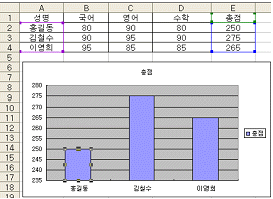
- 해 찾기
- 목표값 찾기
- 데이터 분석
- 수식 분석
(정답률: 43%)
26. 다음 중 워크시트 사용에 관한 설명으로 옳은 것은 ?
- 연속된 여러 개의 시트를 선택할 때는 첫 번째 시트를 선택하고 <Ctrl> 키를 누른 상태에서 원하는 마지막 워크시트의 시트 탭을 클릭하면 된다.
- 통합 문서 내의 모든 시트를 한 번에 선택할 때는 시트 탭에서 마우스 오른쪽 버튼을 눌러 표시되는 바로 가기 메뉴에서 [모든 시트 선택] 메뉴를 선택 하면 된다.
- 다음 워크시트로 전환하려면 <Shift>+<Page Down>을 누르고, 이전 워크시트로 전환하려면 <Shift>+<PageUp>을 누른다.
- 떨어져 있는 여러 개의 시트를 선택할 때는 <Shift> 키를 누른 채로 원하는 워크시트의 시트 탭을 클릭한다.
(정답률: 53%)
27. 아래와 같이 통합 문서 보호를 설정했을 경우에 대한 설명으로 옳지 않은 것은?
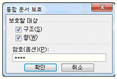
- 암호를 지정했으므로 [도구]-[보호]-[통합 문서보호 해제]를 선택했을 때 암호를 물어본다.
- 시트의 삽입/삭제/이동/이름 바꾸기와 같은 시트에 관련된 작업을 할 수 없다.
- 새 창/창 나누기/틀 고정과 같은 작업을 할 수 없다.
- 셀에 데이터의 입력/수정/삭제/삽입과 같은 작업을 할 수 없다.
(정답률: 49%)
28. 다음 중 50,000,000원을 10년간 대출할 때 연 5%의 이자율이 적용될 때, 매월 말 상환해야 할 불입액을 양수로 표현하는 함수식으로 옳은 것은?
- =PMT(5%/12, 10*12, -50000000)
- =PMT(5%/12, 10, -50000000)
- =PMT(5%/12, 10*12, 50000000)
- =PMT(5%, 12, 10, 50000000)
(정답률: 59%)
29. 다음 ( )에 들어갈 내용으로 알맞은 것은?
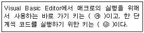
- ㉮ F4 ㉯ F8
- ㉮ F5 ㉯ F9
- ㉮ F5 ㉯ F8
- ㉮ F4 ㉯ Ctrl+F9
(정답률: 61%)
30. 다음 중 [페이지 설정] 대화상자에 대한 설명으로 옳지 않은 것은?
- 용지 방향, 용지 크기, 인쇄 품질을 설정할 수 있다.
- '머리글/바닥글' 탭의 '머리글' 영역에서 행/열 머리글의 인쇄여부를 설정한다.
- 워크 시트에서 차트를 마우스로 선택한 후 [페이지 설정] 메뉴를 선택하면, '시트' 탭이 '차트' 탭으로 바뀐다.
- 여백은 사용자가 직접 값을 입력할 수 있다.
(정답률: 37%)
31. 차트의 3차원 보기 대화상자에 대한 설명으로 옳지 않은 것은?
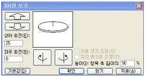
- <기본값> 단추를 클릭하면 2차원 차트로 변경된다.
- '자동 크기 조정' 옵션을 선택하면 '높이(I)' 옵션을 선택할 수 없다.
- 차트의 높이, 원근감, 상하좌우 회전 등을 변경할 수 있다.
- '직각 축으로 고정' 확인란을 선택하면 '자동 크기조정' 옵션을 설정할 수 있다.
(정답률: 45%)
32. 다음 중 출력에 대한 설명으로 옳지 않은 것은?
- 시트의 일부분을 선택하여 인쇄할 수 있다.
- [파일]-[페이지 설정]-[페이지]에서 축소/확대 배율은 10%에서 최대 400%까지 설정할 수 있다.
- [파일]-[페이지 설정]-[페이지]에서 '자동 맞춤'을 선택하면 지정한 용지 너비와 용지 높이에 맞추어 확대되어 인쇄한다.
- [파일]-[페이지 설정]-[시트]에서 '간단하게 인쇄'를 체크하면 워크시트에 삽입된 그림을 인쇄하지 않는다.
(정답률: 47%)
33. 다음 중 [데이터]-[외부데이터 가져오기]를 통하여 외부 데이터를 읽어 들이는 방법에 대한 설명으로 옳지 않은 것은?
- 웹 쿼리를 사용하여 인트라넷 또는 인터넷에 저장된 데이터를 가져올 수 있다.
- 외부 데이터베이스 외에 Microsoft Excel 목록이나 텍스트 파일에 저장된 데이터를 가져올 수 있다.
- Excel 목록이나 관계형 데이터베이스에서 데이터를 읽어 들일 경우 여러 테이블로 구성된 데이터를 가져올 수 있다.
- 텍스트 파일에 있는 모든 데이터를 읽어 들일 경우는 쿼리를 만들어야 외부 데이터 범위로 가져올 수 있다.
(정답률: 51%)
34. 고급 필터에서 다음과 같은 조건을 설정하였을 때, 이 조건에 의해 선택되는 데이터들로 옳은 것은?
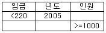
- 인원이 1000이상인 데이터 중에서 임금이 220미만 이거나 년도가 20⑤인 데이터
- 임금이 220미만인 데이터 중에서 년도가 20⑤이고 인원이 1000이상인 데이터
- 임금이 220미만이고 년도가 20⑤인 데이터이거나 인원이 1000이상인 데이터
- 임금이 220미만이거나 년도가 20⑤인 데이터 모두와 인원이 1000이상인 데이터
(정답률: 68%)
35. 아래 시트에서 [A2:A5] 영역의 데이터를 이용하여 [C2:C5] 영역처럼 표시하려고 할 때, [C2]에 입력할 수식으로 옳은 것은?
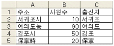
- =LEFT(A2, LEN(A2)-1)
- =RIGHT(A2, LENGTH(A2)) -1
- =MID(A2, 1, VALUE(A2))
- =LEFT(A2, TRIM(A2))-1
(정답률: 52%)
36. 아래 시트에서 [B13]셀에 가장 많이 판매한 서버의 기종을 구하려고 한다. 다음 중 수식으로 옳은 것은?
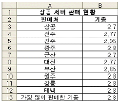
- =STDEV(B3:B12)
- =MODE(B3:B12)
- =COUNTIF(B3:B12)
- =COUNTA(B3:B12)
(정답률: 37%)
37. 다음 중 피벗 테이블에 대한 설명으로 옳지 않은 것은?
- 많은 양의 데이터를 한눈에 파악할 수 있도록 요약하거나 분석하여 보여주는 도구로 피벗 차트와 함께 작성할 수 있다.
- 데이터베이스, 외부 데이터, 다중 통합 범위 등의 데이터를 사용할 수 있다.
- 원본 데이터가 변경되면 도구 모음을 이용하여 피벗테이블의 데이터도 변경되도록 지정할 수 있다.
- 데이터 영역에 표시된 데이터의 일부를 삭제하거나 필요한 데이터를 추가할 수 있다.
(정답률: 47%)
38. 워크시트 상에서 B열의 셀이 선택되었을 때 '대분류'라는 이름으로 정의되어진 영역의 목록과 비교하여 일정한 작업을 하려고 한다. 다음 VBA 코드 중 (가), (나)에 들어갈 알맞은 코드는?
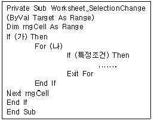
- (가) ActiveCell.Column=B (나) Each rngCell In "대분류"
- (가) ActiveCell.Column=2 (나) Each rngCell In [대분류]
- (가) ActiveCell.Row=2 (나) All rngCell In [대분류]
- (가) ActiveCell.Columns=2 (나) All rngCell In (대분류)
(정답률: 53%)
39. '월요일'부터 '일요일'까지 문자열을 차례대로 셀에 입력하려고 한다. 다음 중 작업 방법으로 옳은 것은?
- 첫 번째 셀에 '월요일'을 입력한 후 채우기 핸들을 드래그한다.
- 첫 번째 셀에 '월요일'을 입력한 후 채우기 핸들을 [Ctrl]을 누른 상태에서 드래그한다.
- 첫 번째 셀에 '월요일'을 입력한 후 복사하여 나머지 영역들을 선택하고 붙여넣기를 실행한다.
- 첫 번째 셀에 '월요일'과 두 번째 셀에 '일요일'을 입력한 후 복사기능을 사용한다.
(정답률: 49%)
40. 아래의 시트에서 셀 포인터가 [A1]셀에 있을 때 [Ctrl]+[*]키를 누르면 선택되는 셀의 범위로 옳은 것은?
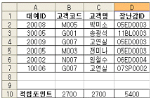
- A1
- A1:D1
- A1:D10
- A1:D7
(정답률: 53%)
3과목: 데이터베이스 일반
41. 다음 중 폼 작업시 탭 순서에서 제외되는 컨트롤로 옳은 것은?
- 레이블
- 언바운드 개체 틀
- 명령 단추
- 토글 단추
(정답률: 44%)
42. 다음 중 기본 폼과 하위 폼의 연결에 관한 설명으로 옳지 않은 것은?
- 두 개 이상의 연결 필드를 지정할 때는 필드들을 콤마(,)로 구분하여 연결한다.
- 폼이 연결되면 기본 폼과 하위 폼은 동기화되므로 하위 폼에는 기본 폼과 연관된 레코드만 표시된다.
- 기본 폼과 하위 폼을 연결할 필드의 데이터 형식은 같거나 호환되어야 한다.
- '하위 폼 필드 연결기' 대화상자에서 기본 폼과 하위 폼의 연결 필드를 지정할 수 있다.
(정답률: 47%)
43. 다음 중 레코드의 그룹화에 대한 설명으로 옳지 않은 것은?
- 그룹화 기능은 특정한 필드에 입력된 값을 기준으로 레코드를 묶어서 그룹단위로 표시하는 기능이다.
- 그룹 머리글은 폼이나 보고서에서 그룹으로 묶을 경우에 표시되며 그룹의 이름, 그룹별 요약 정보 등을 표시할 수 있다.
- 그룹별 레코드 개수를 표시하려면 Count 함수를 사용한다.
- 그룹 속성에서 그룹 간격을 지정할 수 있다.
(정답률: 31%)
44. 다음 보기의 SQL문장이 실행되었을 때 표시되는 필드의 이름으로 옳은 것은?
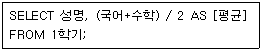
- 성명, 국어
- 성명, 평균
- 성명, 국어, 수학
- 성명, (국어+수학)
(정답률: 64%)
45. 다음과 같은 속성이 설정된 필드에 대한 설명으로 옳지 않은 것은?
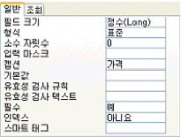
- '데이터시트 보기' 상태에서 필드 값으로 23.7를 입력하면 23으로 기록된다.
- '데이터시트 보기' 상태에서 필드 값으로 12345를 입력하면 12,345로 기록된다.
- 필드값은 반드시 입력해야 한다.
- '데이터시트 보기' 상태에서 필드의 이름은 '가격'으로 표시된다.
(정답률: 47%)
46. 다음 중 필드에 입력되는 값이 'T'로 시작하는 것만 입력되도록 하기 위한 유효성 검사 규칙으로 옳은 것은?
- = "T??"
- = "T"
- Like "T*"
- Like "T??"
(정답률: 66%)
47. 다음 중 SQL 문장의 WHERE 절에 대한 설명으로 옳지 않은 것은?
- WHERE 부서 = '영업부' : 부서 필드의 값이 '영업부'인 레코드들이 검색됨
- WHERE 나이 Between 28 in 40 : 나이 필드의 값이 29에서 39 사이인 레코드들이 검색됨
- WHERE 생일 = #1996-5-10# : 생일 필드의 값이 1996-5-10인 레코드들이 검색됨
- WHERE 입사년도 = 1994 : 입사년도 필드의 값이 1994인 레코드들이 검색됨
(정답률: 73%)
48. 특정 필드의 입력 마스크를 LA09# 설정하였을 때 입력 데이터로 옳은 것은?
- 12345
- A상345
- A123A
- A1BCD
(정답률: 66%)
49. 다음 중 하위 쿼리(Sub query)의 설명으로 옳지 않은 것은?
- 주 쿼리에서 IN 조건부를 사용하여 하위 쿼리의 일부 레코드에 동일한 값이 있는 레코드만 검색할 수 있다.
- 하위 쿼리에서 반환하는 값이 1개일 때는 기본 쿼리에서 ON 연산자를 쓸 수 있다.
- SELECT 문의 필드 목록이나 WHERE 또는 HAVING 절에서 식 대신에 하위 쿼리를 사용할 수 있다.
- 주 쿼리에서 ALL 조건부를 사용하여 하위 쿼리에서 검색된 모든 레코드와 비교를 만족시키는 레코드만 검색할 수 있다.
(정답률: 41%)
50. 다음 중 크로스탭 보고서에 대한 설명으로 옳지 않은 것은?
- 크로스탭 보고서의 본문에 행 머리글과 열 머리글에 사용할 레이블을 배치한다.
- 여러 개의 열로 이루어진 보고서로 각각의 열마다 그룹의 머리글/바닥글, 세부 구역 등이 표시된다.
- 크로스탭 쿼리를 레코드 원본으로 하는 보고서이다.
- 보고서를 가로, 세로 방향으로 그룹화하고, 그룹화한 데이터에 대해 합, 개수, 평균 등의 계산을 수행한 보고서이다.
(정답률: 18%)
51. 보고서 바닥글의 입력란에 다음과 같은 식을 입력하였을 때 출력되는 형식으로 옳은 것은?
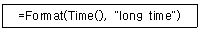
- 11:22
- 11:22:33
- 오후 11:22
- 오후 11:22:33
(정답률: 56%)
52. 회원(회원번호, 사원번호, 이름) 테이블과 사원(사원번호, 이름, 부서) 테이블을 다음과 같이 조인하여 질의한 결과로 옳은 것은?
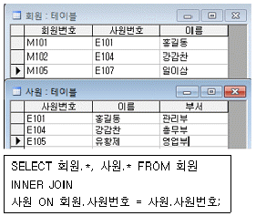
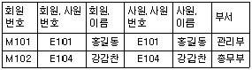
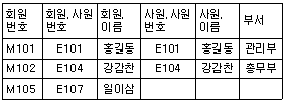
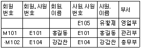
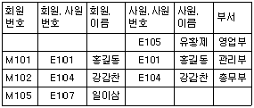
(정답률: 54%)
53. 다음 중 관계형 데이터베이스의 구성요소에 대한 설명으로 옳지 않은 것은?
- 튜플은 속성의 모임으로 구성된다.
- 속성은 데이터의 가장 작은 논리적 단위이다.
- 속성의 수를 차수(Degree)라고 하고, 튜플의 수를 기수(Cardinality)라고 한다.
- 도메인은 하나의 튜플이 가질 수 있는 모든 값의 범위를 말한다.
(정답률: 36%)
54. 다음 중 테이블의 기본 키(Primary Key)의 특성으로 가장 거리가 먼 것은?
- 기본 키는 전체 레코드에 걸쳐 중복된 값이 없는 유일한 값들을 가져야한다.
- 기본 키 필드는 반드시 값을 입력해야 한다.
- 관계 설정 창에서 '관련 필드 모두 업데이트'가 선택되어 있을 경우, 외래 키에 의해 참조되고 있는 기본 키 필드의 값은 수정될 수 없다.
- 테이블에 반드시 기본 키 필드가 있어야 하는 것은 아니다.
(정답률: 46%)
55. 다음 중 보고서에서 텍스트 상자 컨트롤의 누적 합계 속성에 대한 설명으로 옳지 않은 것은?
- 컨트롤 원본에서 바운드된 필드의 값을 누적하여 표시한다.
- 누적 합계 속성을 '그룹'으로 하는 경우 그룹 내에서 바운드된 필드의 누계를 계산해 준다.
- 컨트롤 원본을 '=1'로 설정하고 누적 합계 속성을 '모두'로 설정하는 경우 그룹이 변경되면 그룹별로 순번(일련번호)을 표시한다.
- 누적 합계 속성을 '모두'로 설정하는 경우 바운드된 필드의 전체 누계를 계산해 준다.
(정답률: 59%)
56. 다음 중 데이터베이스 설계 시 정규화(normalization)에 대한 설명으로 옳지 않은 것은?
- 데이터의 이상(anomaly) 현상이 발생하지 않도록 하는 것이다.
- 정규형에는 제 1 정규형에서부터 제 5 정규형까지 있다.
- 릴레이션의 속성들 사이의 종속성 개념에 기반을 두고 이들 종속성을 제거하는 과정이다.
- 정규화는 데이터베이스의 물리적 설계단계에서 수행된다.
(정답률: 56%)
57. 다음 중 액세스의 폼 작성에 대한 설명으로 옳지 않은 것은?
- SQL 문의 실행 결과를 폼에 나타내려면 해당 SQL문을 레코드 원본으로 설정한다.
- 특정 필드의 값을 표시하려면 반드시 해당 필드에 바운드되는 컨트롤을 만들어야 한다.
- 컨트롤 원본 속성을 식으로 설정한 컨트롤에는 값을 입력할 수 없다.
- 레코드 원본이 아닌 테이블의 필드 값은 컨트롤에 표시할 수 없다.
(정답률: 32%)
58. 다음 중 매크로 함수와 그에 대한 설명으로 옳지 않은 것은?
- ApplyFilter : 필터, 쿼리, SQL WHERE 절을 테이블, 폼, 보고서에 적용하여 테이블의 레코드, 폼이나 보고서의 원본이 되는 테이블이나 쿼리의 레코드를 제한하거나 정렬할 수 있다.
- FindRecord : 지정한 조건에 맞는 데이터의 첫째 인스턴스를 찾을 수 있다.
- RunSQL : Microsoft Access 안에서 Microsoft Excel, Microsoft Word, Microsoft PowerPoint와 같은 Windows 기반 또는 MS-DOS 기반 응용 프로그램을 실행할 수 있다.
- Requery : 현재 개체의 지정한 컨트롤의 데이터를 업데이트할 수 있으며, 컨트롤을 지정하지 않으면 개체 원본 자체를 다시 쿼리한다.
(정답률: 38%)
59. 다음 중 하나 이상의 값을 선택할 수 있는 컨트롤로만 구성된 것으로 옳은 것은?
- 옵션 단추, 확인란
- 옵션 단추, 콤보 상자
- 목록 상자, 콤보 상자
- 확인란, 목록 상자
(정답률: 27%)
60. 다음에 제시된 프로시저를 폼의 크기가 바뀔 때와 폼이 처음으로 표시될 때 발생시키려고 하려면 프로시저의 ( ) 부분에 적당한 코드는 무엇인가?
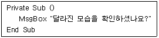
- Form_Open()
- Form_Load()
- Form_Initialize( )
- Form_Resize( )
(정답률: 44%)